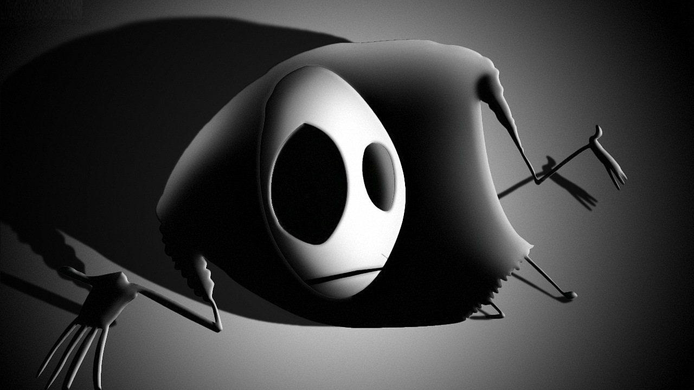

Главная __ Музыкальная рубрика __ Зал славы

Mr. Freeman (рус. Мистер Свободный Человек) — главный персонаж анимационного веб-сериала, появившегося на YouTube 21 сентября 2009 года и завоевавшего немалую популярность в Рунете. Основное содержание роликов — монологи, в жёсткой форме критикующие образ жизни современного обывателя. На данный момент вышло 19 эпизодов сериала + 10 видеовопросов Фримэна к своим зрителям + ролик «Выступление на Трансперсональном конгрессе 2010», который эпизодом не считается. Суммарное количество просмотров на Youtube — более 39 миллионов. Главного героя мультфильма озвучивает российский актёр Вадим Демчог — 14 ноября 2010 года в эфире радиостанции «Эхо Москвы» Демчог официально заявил о своём непосредственном отношении к проекту, заявив, что озвучивал главного героя только в первых выпусках, но 11 декабря 2011 года в эфире той же радиостанции, что и в первый раз, Демчог признался, что озвучивал Фримэна во всех выпусках. Также стало известно, что над сериалом работала анимационная студия Павла Мунтяна и Владимира Пономарёва.